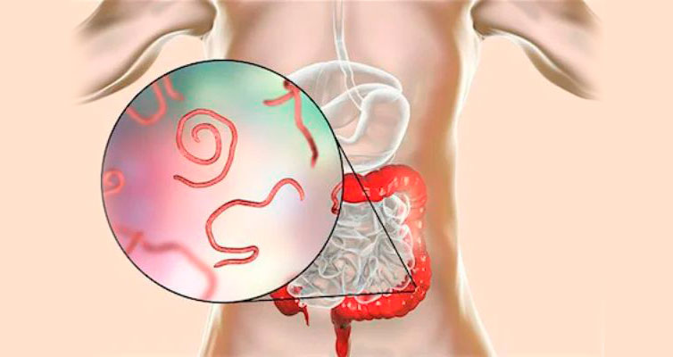
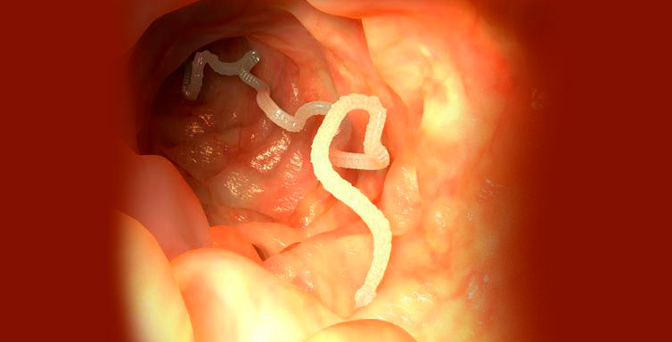
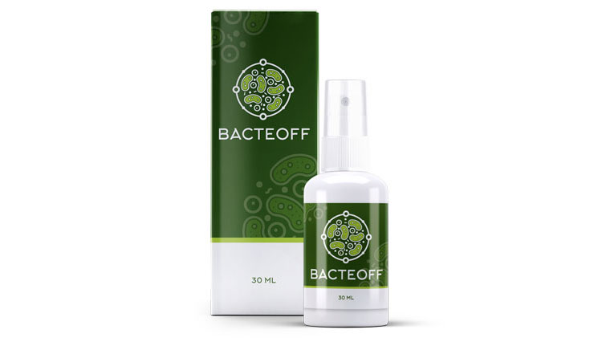

Миллионы людей не подозревают, что заражены паразитами. Диагностировать наличие “вредителей” в организме не всегда легко, поскольку многие симптомы легко спутать с признаками других заболеваний. Избавиться от вредоносных организмов сложнее, чем кажется – они довольно живучи и активно размножаются. Например, личинки глистной инвазии могут остаться у человека, даже после очистки организма от взрослых особей. А симптомы (если они проявляются) чаще всего списывают на другие заболевания. Паразитолог-иммунолог Katie Canavan рассказала, как быстро выявить и вылечить заражение паразитами.

— Здравствуйте, доктор. Неужели проблема заражения паразитами действительно актуальна?
— Здравствуйте. Если мы посмотрим статистику, то по данным 2010 года зараженных в мире насчитывалось не больше 3 миллиардов людей. За десять лет число заболевших выросло до 5 миллиардов.
— Какой ужас, так много людей! Неужели паразитов так сложно вывести?
— Да, многие люди не знают, что заражены. И вылечиться сложнее, чем кажется. Некоторые люди думают, что выпьют одну таблетку и все паразиты погибнут. Но они не учитывают тот факт, что с одного раза невозможно вывести всех особей и их яйца.
— Как можно не почувствовать внутри себя червей?
— Это не всегда черви. Существуют и такие микроорганизмы, которые не выявляются даже в ходе расширенных обследований.
— То есть человек может провериться на паразитов и думать, что он здоров, а на самом деле заражен?
— К сожалению, это так. В природе с каждым днем появляется новые виды. Паразит приспосабливается, меняет свое ДНК, форму, структуру и остается невидимым долгое время. Бывали такие случаи, когда люди говорили, что внутри кто-то ползает. Им делали полное обследование, но ничего не находили. Некоторых перенаправляли в психиатрическое отделение. Через время, когда паразитов лечить было уже поздно, оказывалось, что они заражены ранее неизвестным видом.

— Какой ужас! Все ли паразиты негативно влияют на организм?
— Все без исключения паразиты питаются витаминами и микроэлементами хозяина, при этом, повреждают его ткани. Например, аскарида в кишечнике будет давить, травмировать стенку кишечника. Эхинококк, находясь где-то в печени, в лёгких, или в почках, становится причиной образования кисты и даже злокачественных опухолей.
— Как ими можно заразиться?
— Самыми разными способами. Филяриозом заражаются после укуса насекомого. Яйца круглых глистов, аскарид, попадают в организм с пищей, водой или от домашних животных. Трихинеллы попадают внутрь при поедании плохо обработанной еды.
— Я слышала, что при заражении паразитами часто появляется аллергия, которую невозможно вылечить.
— При аллергических реакцияхбольной начинает ходить по кругу:к дерматологу, к терапевту, к аллергологу. Но может так и не узнать, что причина аллергии – жизнедеятельность паразитов.
— Правда ли, что вредоносные организмы повреждают иммунную систему?
— Конечно, а также микрофлору и нервную систему. Отсюда частые простуды и развитие хронических заболеваний. Паразиты вырабатывают антиферменты, угнетая иммунную систему. Рано или поздно это приводит к серьезным заболеваниям.
— Каким?
— Все зависит от органа и масштаба поражения. Самое опасное, что могут вызвать паразиты из-за повреждения органа или сбоя в работе иммунной системы – новообразования. Как доброкачественные, так и злокачественные.
— Чем больше я узнаю о паразитах, тем мне становится страшнее. Правда ли, что паразиты могут вызвать подавленное состояние?
— Паразиты могут даже управлять человеком. Продукты их жизнедеятельности отравляют нервную систему. Любое психосоматическое заболевание может быть связано с паразитарной инвазией. Даже простейшая лямблия вырабатывает токсины. Микродозы токсинов воздействуют на организм как психотропные вещества. Нарушения сна, психозы, навязчивые идеи, депрессии и другие психологические проблемы.
— Что принять, если узнал, что заражен?
— Проблема многих препаратов в том, что они только парализуют вредоносные организмы, но не выводит их. Либо выводит частично. Для выздоровления нужна полная очистка организма.
— Есть ли способ полностью вывести паразитов?
— Он появился совсем недавно. Очистить и восстановить организм поможет натуральный антипаразитарный препарат Bacteoff. На данный момент, это единственное средство, которое не только боретсясо всеми известными видами и очищаеторганизм от продуктов жизнедеятельности, но и создает защитный барьер, который не дает даже неизвестным видам паразитов попасть в организм.

— Как такое возможно? Расскажите подробнее!
— Попадая в организм человека, Bacteoffблокирует нервную систему паразитов, из-за чего они не могут двигаться, размножаться и питаться. После этого, парализованные организмы открепляются от стенок внутренних органов и выводятся естественным путем. Препарат выводит не только самих паразитов, но и личинки и продукты жизнедеятельности. Завершающий этап – восстановление поврежденных тканей и иммуномодуляция. Поэтому так важно пропивать полный курс препарата.
— Есть ли противопоказания и можно принимать это средство для профилактики?
— Каждый день мы подвержены заражению. 95% населения уже инфицированы и половина из них не знают об этом. Поэтому так важно обезопасить себя и близких. А в отличие от аптечных средств, Bacteoffможно принимать и для профилактики.
— Где можно приобрести это средство?
—Bacteoffможно заказать напрямую у производителя с доставкой на дом. Препарат можно оплатить и по предоплате и при получении курьеру – очень удобно.
— Спасибо вам большое за такое подробное интервью.
— Спасибо вам, что решили осветить такую важную проблему современности. Всего вам хорошего и будьте здоровы.